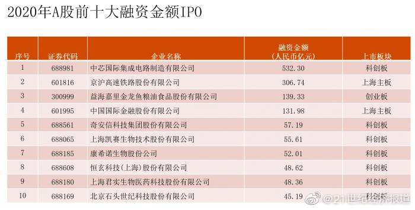
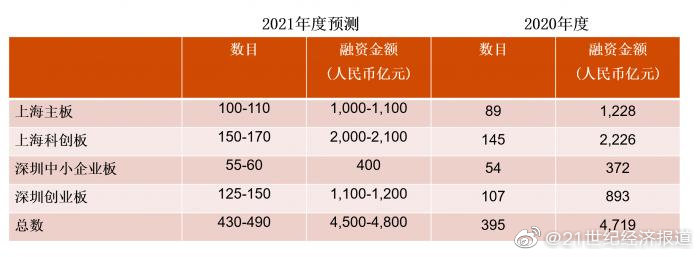

A股可能至少有1/3股票永远也不会回到最高价了
@21世纪经济报道:
【普华永道：预计2021年A股IPO数量将达430-490家，融资额有望再创新高达4500-4800亿元】1月4日，普华永道“首次上市融资新闻发布会——2020回顾与2021年前瞻”在北京召开。“展望2021年，得益于‘双循环’新格局和中央‘十四五’规划进入新发展阶段的战略机遇，若干配套因素均利好资本市场以及聚焦全面实行注册制的推动，A股IPO将会继续保持良好发展势头，A股IPO融资额或将再创近10年新高，预计2021年A股多层级资本市场获得IPO企业数量将达430-490家，融资规模为4500-4800亿元人民币。” 普华永道中国市场主管合伙人梁伟坚表示>>> 普华永道：预计2021年A股IPO数量将达430-490家，融资额有望再创新高达4500-4800亿元
普华永道：预计2021年A股IPO数量将达430-490家，融资额有望再创新高达4500-4800亿元
- 
- 